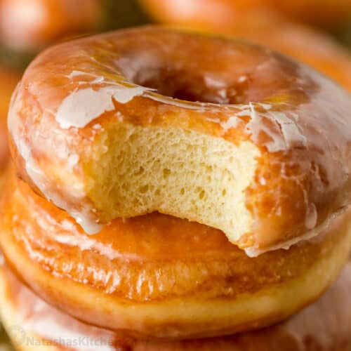

Doughnut Recipe

Two doughnuts stacked on top of each other with a bite taken out of one
Imagine a perfectly round and golden doughnut, a work of art in the world of pastries. This sweet masterpiece is a delight for the senses.Its exterior is flawless, glistening with a smooth, translucent glaze that hints at the treasures concealed within. With a gentle press of your fingers, the surface yields ever so slightly, promising a soft, tender interior. As you take your first bite, you're greeted with a slight resistance that gives way to a burst of flavor. The doughnut is pillowy-soft, almost ethereal, with a hint of sweetness that dances on your taste buds.
Ingredients
- 2 ¼ teaspoons (1 packet) active dry yeast
- 2 tablespoons warm water (around 110°F or 43°C)
- ¾ cup warm milk (around 110°F or 43°C)
- ¼ cup granulated sugar
- 2 tablespoons unsalted butter, melted
- 1 teaspoon salt
- 2 large eggs
- 3 ½ cups all-purpose flour, plus more for dusting
- Vegetable oil for frying
- ½ cup granulated sugar (for coating)
- 1-2 teaspoons ground cinnamon (for coating, optional)
Instructions
- Prepare the Dough:
In a small bowl, combine the warm water and yeast. Let it sit for about 5 minutes until it becomes frothy.
In a large mixing bowl, combine the warm milk, sugar, melted butter, salt, and eggs. Add the yeast mixture and mix well.
Gradually add the flour, mixing until a soft dough forms.
Knead the dough on a lightly floured surface for about 5 minutes until it becomes smooth and elastic.
- First Rise:
Place the dough in a greased bowl, cover it with a clean kitchen towel, and let it rise in a warm, draft-free place for about 1 hour or until it has doubled in size.
-
Shape the Doughnuts:
After the dough has risen, punch it down and roll it out on a floured surface to about ½ inch thickness.
Use a doughnut cutter or a round cookie cutter to cut out doughnut shapes. If you don't have a cutter, you can use a glass and a smaller one for the holes.
Place the cut doughnuts on a baking sheet lined with parchment paper, cover them with a kitchen towel, and let them rise for another 30 minutes.
-
Heat the Oil:
In a deep, heavy-bottomed pot or a deep fryer, heat about 2-3 inches of vegetable oil to 350°F (175°C).
-
Fry the Doughnuts:
Carefully slide the doughnuts into the hot oil, a few at a time, avoiding overcrowding. Fry for about 1-2 minutes on each side or until they are golden brown.
Remove the fried doughnuts with a slotted spoon and place them on paper towels to drain any excess oil.
-
Coat the Doughnuts:
While the doughnuts are still warm, roll them in a mixture of granulated sugar and ground cinnamon, if desired, to coat them evenly.
-
Enjoy:
Serve your homemade doughnuts warm and enjoy their deliciousness!
You can also get creative with toppings and fillings, such as glazes, powdered sugar, or jelly fillings, to customize your doughnuts to your liking.
Back To Home